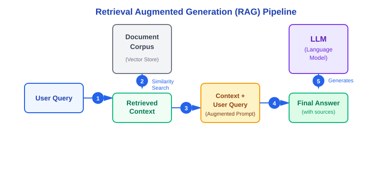

Understand Retrieval Augmented Generation (RAG)
Learning Objectives
- Understand what RAG is and the problems it solves
- Learn the RAG architecture and workflow
- Recognize when to use RAG vs. other approaches
- Understand the benefits and trade-offs of RAG systems
What is RAG?
Retrieval Augmented Generation (RAG) is a technique that enhances Large Language Model (LLM) responses by retrieving relevant information from external knowledge sources before generating an answer.
Think of RAG as giving an LLM access to a library of reference materials. Instead of relying solely on what it learned during training, the LLM can "look up" specific information and use it to generate more accurate, grounded responses.
The Problem RAG Solves
LLMs have impressive capabilities, but they face several limitations:
- Knowledge Cutoff: LLMs are trained on data up to a specific date. They don't know about events, updates, or information after that date.
- No Domain-Specific Data: LLMs lack detailed knowledge about your specific business, documents, or proprietary information.
- Hallucinations: When uncertain, LLMs may generate plausible-sounding but incorrect information.
- No Attribution: Standard LLM responses don't cite sources, making it hard to verify accuracy.
- Expensive to Update: Retraining an LLM with new information is costly and impractical for frequent updates.
How RAG Works

The complete RAG pipeline: from user query to final answer with sources
The RAG Pipeline (5 Steps)
1. User Query
The process begins when a user asks a question:
"What dietary accommodations does Eleven Madison Park offer?"
2. Retrieve Relevant Context
The system searches a document corpus (vector database) to find the most relevant information using similarity search. Instead of exact keyword matching, it finds semantically similar content.
3. Retrieved Context
The top matching document chunks are extracted. For example:
- "We offer fully plant-based menus for guests with dietary preferences..."
- "Our culinary team accommodates all food allergies and restrictions..."
- "Vegetarian and vegan options available upon request..."
4. Augmented Prompt
The user's question and retrieved context are combined into an enhanced prompt:
Context: [Retrieved documents about dietary accommodations]
Question: What dietary accommodations does Eleven Madison Park offer?
Instructions: Answer the question based on the provided context.
If the context doesn't contain the answer, say so.5. LLM Generates Answer
The LLM receives the augmented prompt and generates a response grounded in the retrieved facts:
Answer: "Eleven Madison Park offers comprehensive dietary accommodations, including fully plant-based menus, vegetarian and vegan options, and accommodations for all food allergies and restrictions. The culinary team works with each guest to ensure their preferences are met."
Sources: [Links to source documents]
Key Benefits of RAG
- Accuracy: Responses are grounded in actual data, reducing hallucinations
- Current Information: Update the document corpus without retraining the model
- Attribution: Cite sources so users can verify information
- Domain Expertise: Add specialized knowledge not in the LLM's training data
- Cost-Effective: No expensive model retraining needed
- Privacy: Keep sensitive data out of training; query it on-demand
When to Use RAG
RAG is ideal for:
- ✅ Customer support chatbots answering from documentation
- ✅ Question-answering over internal knowledge bases
- ✅ Research assistants synthesizing information from papers
- ✅ Domain-specific assistants (legal, medical, technical docs)
- ✅ Applications requiring source citations
- ✅ Systems needing frequently updated information
RAG might not be necessary for:
- ❌ General creative writing or brainstorming
- ❌ Simple classification tasks
- ❌ Tasks where the LLM's training data is sufficient
- ❌ Real-time applications with strict latency requirements
RAG vs. Other Approaches
| Approach | Pros | Cons |
|---|---|---|
| RAG | Easy to update, cites sources, domain-specific | Slightly higher latency, requires vector DB |
| Fine-Tuning | Learns patterns, fast inference, no retrieval step | Expensive, hard to update, no source attribution |
| Prompt Engineering | Simple, no infrastructure, flexible | Limited by context window, no external knowledge |
Key Takeaways
- RAG combines retrieval (finding relevant information) with generation (creating natural language responses)
- RAG solves LLM limitations: knowledge cutoffs, lack of domain expertise, and hallucinations
- The pipeline: Query → Retrieve Context → Augment Prompt → Generate Answer
- RAG enables accurate, up-to-date, source-attributed responses without retraining models
- Best for applications requiring domain-specific knowledge and verifiable information